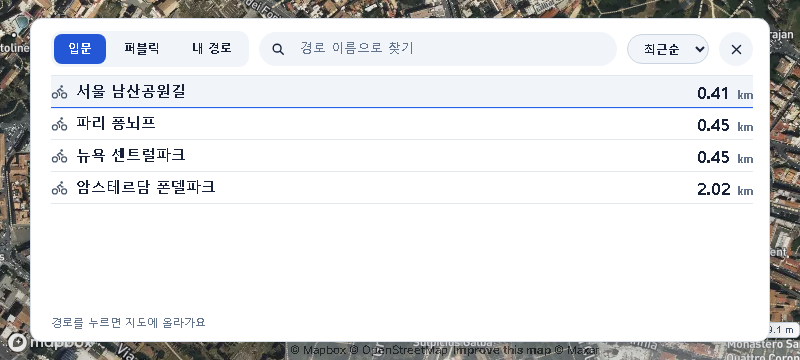
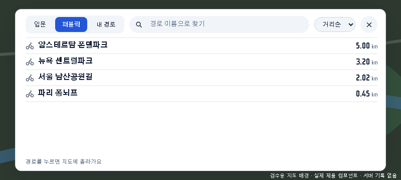
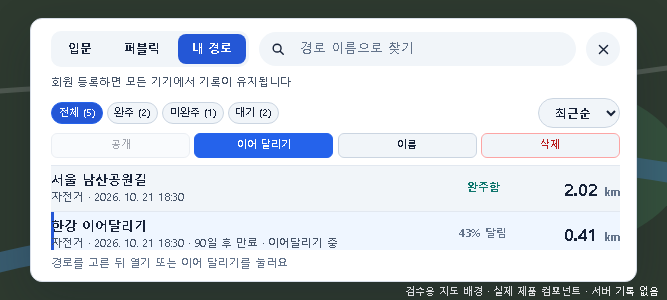
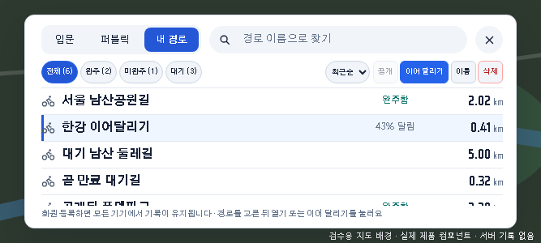
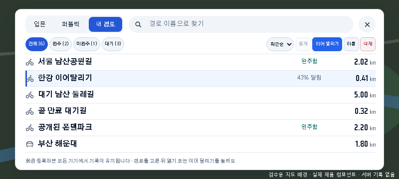

경로 목록 · 경로당 한 줄 + 이동수단 아이콘
2026-10-24 Chief 지시(17·19) 반영. 이동수단 글자 대신 경로 찾기 팝업과 같은 아이콘, 작성자·날짜 등은 마우스 올림 설명으로. 내 경로는 필터·관리 버튼·정렬을 한 줄로 합쳤다.
입문 · 실제 App(에뮬레이터) 800×360
이전(두 줄) 지금(한 줄)
지금(한 줄)
퍼블릭 · 실제 컴포넌트 예시 데이터 800×360
지금(한 줄) — 실앱 에뮬레이터에는 퍼블릭 경로가 없어 예시 데이터로 확인
내 경로 · 실제 컴포넌트 예시 데이터
이전 667×300 — 2.5행
지금 667×300 — 4행
지금 800×360 — 6행, 자동차 아이콘(부산 해운대) 포함